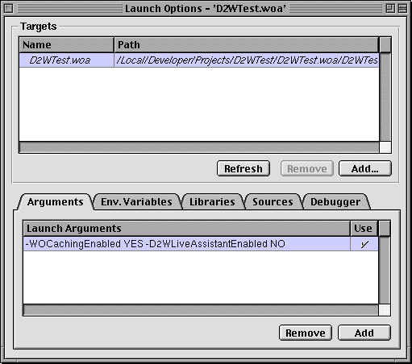

PATH
WebObjects 4.0 Documentation >
WebObjects Tools and Techniques
 Table of Contents
Table of Contents  Previous Section
Previous Section
Using Your Direct to Web Application
Once you have created a Direct to Web application using Project Builder and the WebObjects application wizard, and have compiled the resulting project files, you can launch the application using Project Builder's Launch panel. The application pages are displayed in a web browser, where you can test the application's presentation of data and, with the WebAssistant enabled, modify the layout of that data.
Launching a Direct to Web Application
To launch your application from Project Builder:
- Click
 in the toolbar in Project Builder's main window to open the Launch panel.
in the toolbar in Project Builder's main window to open the Launch panel.
- Click
 in the Launch panel to launch your application.
in the Launch panel to launch your application.
Before you launch the application you might want to set some command line options. For example, when running a Direct to Web Application for deployment, you should turn on caching and disable the WebAssistant (to prevent anyone from connect to the appliation using WebAssistant). To do this, set the -WOCachingEnabled and -D2WLiveAssistantEnabled options, respectively:
- Click to bring up the Launch Options panel.

- Click the Arguments tab.
- Click Add to create a new command line and type the entires as shown in the above example. If there is no checkmark under the Use column, double-click the line under Use to set it.
For other command-line options for WebObjects applications, such as -WOPort, see Serving WebObjects.
You can test the Direct to Web application using a web browser on a machine remote from the machine on which the application is running (that is, the server). When you launch the application, look in the console output, which is displayed in the Launch panel, for the line containing application's URL.
Jul 28 09:48:52 D2WTest[2777] Your application's URL is:
http://localhost:1234/cgi-bin/WebObjects/D2WTest
Enter the URL in your browser, after substituting the host name of the server machine for "localhost". In fact, you can exclude every thing in the URL after the application port number. For example, if the server host name is "foobar" you would enter the following URL in the browser to load the WebObjects application:
http://foobar:1234/
Table of Contents  Next Section
Next Section